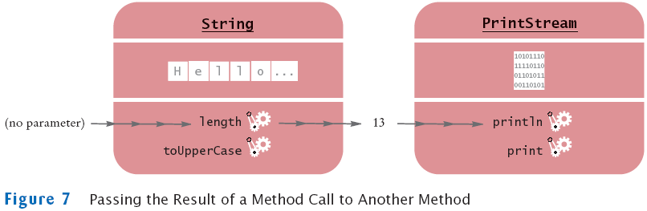

previous
|
start
|
next
Passing Return Values
You can also use the return value as a parameter of another method:
System.out.println(greeting.length());
Not all methods return values. Example:
println

previous
|
start
|
next